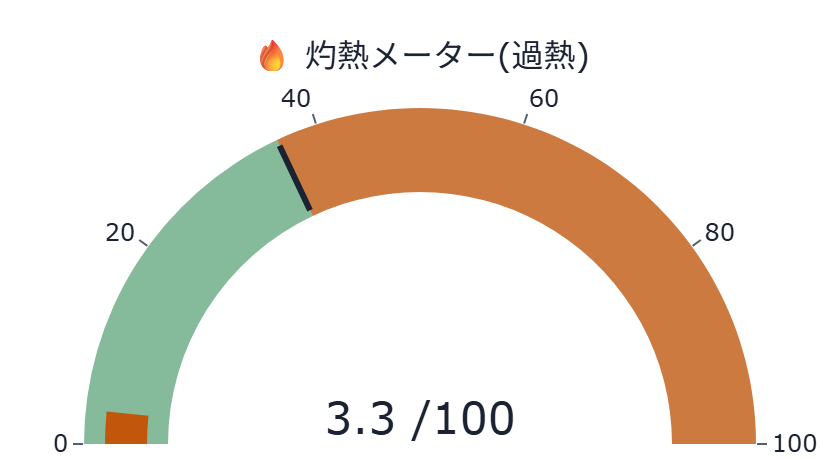
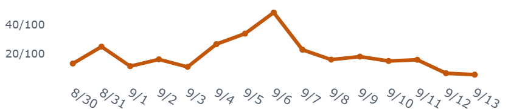
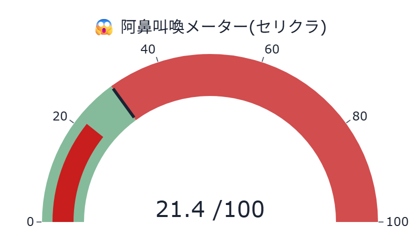
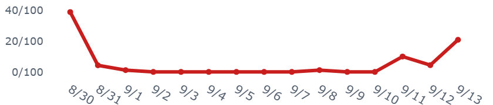
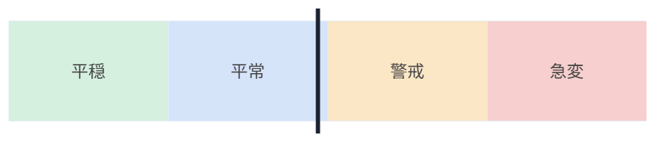
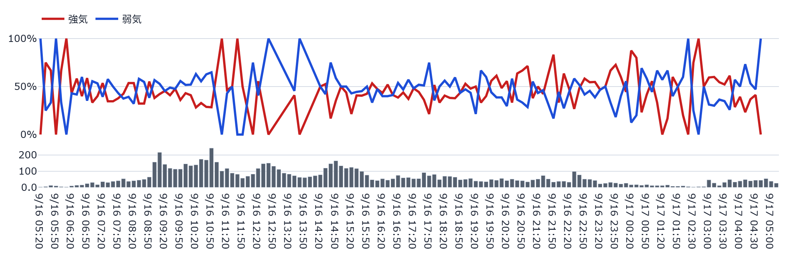
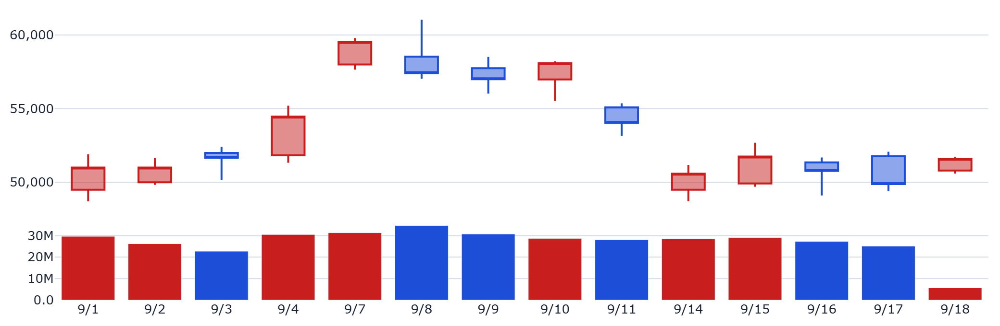
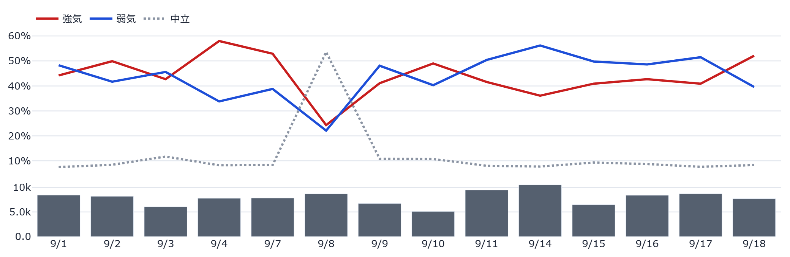

① 株価ヘッダー — 現在値・騰落率と最終更新時刻です。裏側のデータは 1分間隔のタスクで自動生成され、このページ自体も60秒毎に ブラウザが自動的に再読み込みして最新のスナップショットを表示します（手動更新は不要です）。 取引時間中に更新が止まっている可能性がある場合は「⚠️データの更新が…」という注意書きが 表示されます。
② 🔥灼熱メーター／😱阿鼻叫喚メーター — 掲示板の投稿内容から算出した 「過熱度」「セリングクライマックス度」の合成指標です。売買のシグナルではありません。
③ ボラ・レジーム帯 — 現在の値動きの荒さが「平穏〜急変」のどの水準にあるかの目安です。 データ蓄積初期は「較正中」と表示され、これは異常ではなく閾値を学習している途中であることを 示します。
④ シグナル発火状況（9指標） — 投稿の偏り・語彙・投稿量などを9つの観点で統計的に チェックした一覧です。🟢OK=平常範囲内／🟠警戒=やや偏りが大きい／🔴発火=閾値超過、を示す 記述的なラベルであり、売買の推奨ではありません。
⑤ 本日の推移 — 価格推移(10分足)・板の買い/売り総計(60秒平均)・本日のセンチメント推移を 東証立会時間の同じ横軸で並べています。価格推移の見出し下には本日の高値・安値も表示します。
⑥ 過去14日間の推移 — 直近14営業日ぶんの日足価格とセンチメント推移です。
⑦ 過去24時間のセンチメント推移 — 暦日をまたいだ直近24時間ぶんのローリング窓です。
⑧ PTS・米国ADR（表示される場合のみ） — 東証の取引時間外の値動きです。 PTS=私設取引システムでの夜間取引、ADR=米国預託証券(円換算)。あくまで翌営業日の値動きを 見る上での参考情報であり、それ自体が値上がり/値下がりを予測するものではありません。
⑨ 🤖AI考察 — 上記の集計値のみをもとにAIが生成した文章です。個別の投稿内容や ユーザー名は一切含まれません。
件数・数量系のグラフ(投稿量・板の買い/売り総計等)に統計的な外れ値が自動検出された場合は、 グラフ直下に「⚠️自動検出された外れ値」として注記が表示されます(値そのものは書き換えません)。
本ダッシュボードは研究・エンタメ用途の情報提供であり、投資助言ではありません。
更新時刻: 2026-09-07T05:25:43（データは1分間隔で自動生成され、このページも 60秒毎に自動再読み込みされます）
👀 累計閲覧数: 2,974





現在レジーム: 較正中 (BVP=0.202)
PTS=東証取引時間外の私設取引システム／ADR=米国預託証券。翌営業日の値動きの参考情報です(それ自体が売買シグナルではありません)。
※ニュース見出しの要約であり、投資助言ではありません。各見出しから元記事(Google News経由)へ移動できます。
掲示板の投稿を集計した9つの指標が、統計的なしきい値を超えたかどうかを示す一覧です。 「発火」は売買のシグナルではなく、「統計的に見て平常時より偏りが大きい状態」を示す記述的な警告ラベルです。
※研究・エンタメ用途・未検証。売買シグナルではありません。 掲示板は方向よりボラを予測する傾向が文献で報告されています(Antweiler & Frank, 2004)。
本日の価格推移: データ蓄積中です。
表示10本の気配だけでなく、外側の気配(OVER/UNDER)と成行注文も含めた板全体の数量合計です。 値は直近60秒間の平均。需給の偏りを直接示す指標ではありません。
板の買い・売り総計: データ蓄積中です。
本日のセンチメント推移: データ蓄積中です。



| 値幅の目安 | 上側の水準 | 下側の水準 |
|---|---|---|
| 0.5SD（±2.89%） | 56,036円 | 52,884円 |
| 1.0SD（±5.79%） | 57,612円 | 51,308円 |
| 1.5SD（±8.68%） | 59,189円 | 49,731円 |
直近14日間の最高値（2026-08-18・57,150円）からの乖離: -4.71%
SDは直近14日間の日次終値リターンの標準偏差（5.79%/日）から算出した値幅の目安であり、到達を予測するものではありません。
海外ピアの値動き・本日の値動きの型はいずれも事実の記述であり、翌営業日の値動きを予測するものではありません。値動き÷執行コストは値幅の大きさの目安であり、実際に利益を確保できることを意味しません。
| 日付 | 前日比 | 値動き÷執行コスト |
|---|---|---|
| 2026-08-24 | -6.24% | 約226.1倍 |
| 2026-08-25 | +0.65% | 約23.5倍 |
| 2026-08-26 | -2.46% | 約89.1倍 |
| 2026-08-27 | +5.00% | 約181.2倍 |
| 2026-08-28 | -8.76% | 約317.5倍 |
| 2026-08-31 | +4.36% | 約158.1倍 |
| 2026-09-01 | +2.02% | 約73.2倍 |
| 2026-09-02 | +0.00% | 約0.0倍 |
| 2026-09-03 | +1.31% | 約47.6倍 |
| 2026-09-04 | +5.40% | 約195.6倍 |
執行コスト(往復実効費用・実測2.76bp・37日分の板ウォーク実測)は日によらず一定の値として比較しています。倍率が大きいほど値動きが執行コストに対して相対的に大きかったことを示す目安であり、実際に利益を確保できることを意味しません。
前回集計(2026-09-07T05:15:43)との比較
生成時刻: 2026-09-07T05:25:43
⚠️ 本情報は掲示板投稿を統計的に集計したものであり、投資助言ではありません。個別の投稿内容は含まれていません。研究・エンタメ用途です。